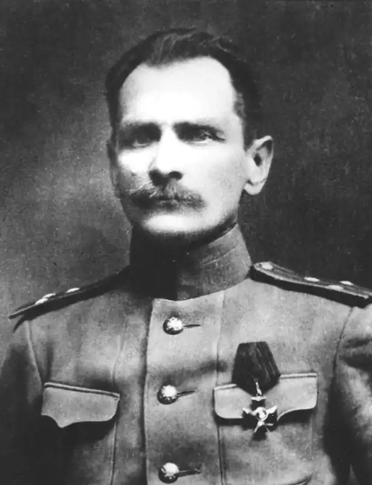
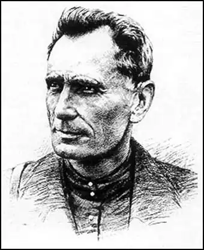

Російський мандрівник, дослідник Далекого Сходу, етнограф і письменник.
Володимир Клавдійович Арсеньєв народився 29 серпня 1872 року в Петербурзі в сім'ї залізничного службовця Клавдія Федоровича Арсеньєва. Коли прийшла пора задуматися про майбутнє сина, батьки вирішили віддати його вчитися за свій рахунок у військове училище. 22 листопада 1891 року Володимира Арсеньєва, успішно здала іспити, зарахували вольноопределяющихся в 145-ї Новочеркаський полк з відрядженням в Петербурзьке піхотне юнкерське училище.
Спочатку Арсеньєва захопила нова обстановка і незвичні навчальні дисципліни, він навіть став подумувати про те, щоб присвятити себе військовій службі. Але інтерес до армійській службі пройшов: позначилися юнкерські будні з постійною муштрою і напруженою навчанням. З задоволенням юнкер Арсеньєв ходив лише на лекції з географії, які читав знаменитий мандрівник по Середній Азії М. Е. Грум-Гржимайло. Він відкрив перед молодим Арсеньєвим захоплюючий світ подорожей, а у бесідах, які вони нерідко вели після занять, радив звернути увагу на Далекий Схід, в ту пору майже незнайомий дослідникам. По закінченні училища 12 серпня 1895 року подпрапорщика Володимира Арсеньєва направили в рідній 145-й піхотний Новочеркаський полк, а 18 січня 1896 року виробили в підпоручики і відрядили до 14-ї Олонецкий піхотний полк, який був розквартирований в р. Ломжи Царства Польського. Через рік Арсеньєв отримав свій перший відпустку. У цей приїзд додому він не на жарт зацікавився знайомої з дитинства вісімнадцятирічною дівчиною Анею Кадашевич. Батьки вітали вибір сина. Незабаром вони одружилися і поїхали в Польщу. 1 травня 1900 року В. К. Арсеньєва виробили в поручики і перевели на його прохання в 1-й Владивостоцький кріпосної піхотний полк. Дорога Володимира Арсеньєва у Владивосток виявилася довгою і повної пригод. Ледве він дістався до Благовєщенська, як його зупинили події, пов'язаними з боксерським повстанням в Китаї. Усіх військових, які опинилися у цей час в Благовєщенську, мобілізували для участі в бойових діях. У послужному списку поручика Арсеньєва з'явилася такий запис: "Перебував у складі Благовіщенського загону генерал-лейтенанта Грибского з 8 по 25 липня 1900 року гарнізону бомбардируемого р. Благовещенська і 20 липня 1900 року брав участь у справах за выбитии китайців з позиції р. Сахаляна". Під Владивосток поручик Арсеньєв прибув 5 серпня 1900 року. До приїзду родини йому виділили невеликий будиночок в Гнилому кутку — так називалося містечко в самому кінці бухти Золотий Ріг, відоме вогкістю і туманами. Наказом по полку новачка призначили виконуючим обов'язки завідувача навчальної командою. Багато часу поручик В. К. Арсеньєв проводив з молодими солдатами, намагаючись полегшити тягар довгого розставання з будинком. У перший же рік служби у Владивостоці В. К. Арсеньєв вступив у Товариство любителів полювання і незабаром став його активним членом. Знайомство з місцевим населенням, бажання краще пізнати улюблений край, підштовхнули офіцера до дослідницької діяльності. Недолік знань з природничих та історичних наук він заповнював в Суспільстві вивчення Амурського краю, куди його привів однополчанин і ентузіаст-краєзнавець Н.В.Кирилов. 16 травня 1903 року, як це видно з протоколу N 19 Розпорядчого комітету ОИАК, він був прийнятий в Товариство дійсним членом. А 13 червня у книзі протоколів з'явилася такий запис: "Вислухано пропозицію поручика В. К. Арсеньєва поповнювати музей різного роду матеріалами як зоологічного відділу (шкури, скелети тощо), так і ботанічного і взагалі природничо-історичного та етнографічного. Крім того, В. К. Арсеньєв пропонує членам ОИАК своє сприяння в разі бажання кого-небудь брати участь у мисливських екскурсіях, причому навіть може надати верхову кінь. Постановили: прийняти пропозицію з вдячністю і обіцяти сприяти зі свого боку успіху колекціонування доставлянням необхідного матеріалу і т. подібним". ОИАК було джерелом знань для допитливого В. К. Арсеньєва. Шкіпер Ф. К. Гек привозив для Суспільства із своїх плавань чудові колекції, що розповідають про життя аборигенів Далекого Сходу. Ф. А. Дербек, корабельний лікар, став директором музею ОИАК на громадських засадах, був захоплений етнографією. Геолог Е. Е. Анерт вивчав Маньчжурію, а його колега П. І. Польовий — Сахалін. У вільний час В. К. Арсеньєв теж став здійснювати невеликі походи по краю, вивчаючи його рослинний і тваринний світ. Свою відпустку він провів в експедиції по Примор'ї і зібрав цінні археологічні матеріали. Про знахідки В. К. Арсеньєва повідомили голові Приамурського відділу Імператорського Російського географічного товариства С. Н.Ванкову.* Той доповів про них Приамурскому генерал-губернатора Н.І.Гродекову, який видав наказ: вважати відпустку офіцера, проведений за дослідженнями, службовим відрядженням. Найбільш близьким другом і соратником Арсеньєва став Микола Олександрович Пальчевський, колишній віце-голова Товариства, людина з непростим характером, у якого була мета організувати при музеї першу на Тихому океані морську біологічну станцію. Перша зустріч з ним майбутнього мандрівникові запам'яталася на все життя. Коли поручик прийшов у музей і звернувся до Пальчевському за допомогою у вивченні краю, той, глянувши з-під кущистих брів, запропонував спочатку витерти пил з музейних експонатів. Здивований Арсеньєв мовчки зняв киталь і взявся за прибирання. Вже потім вони розговорилися, і Пальчевський зізнався, що він хотів перевірити ентузіазм нового відвідувача. Будучи справжнім енциклопедистом краю, він взяв Арсеньєва під свою опіку. Удвох вони часто здійснювали тривалі прогулянки, і Микола Олександрович, по натурі добрий і чуйний чоловік, із задоволенням ділився своїми великими знаннями.